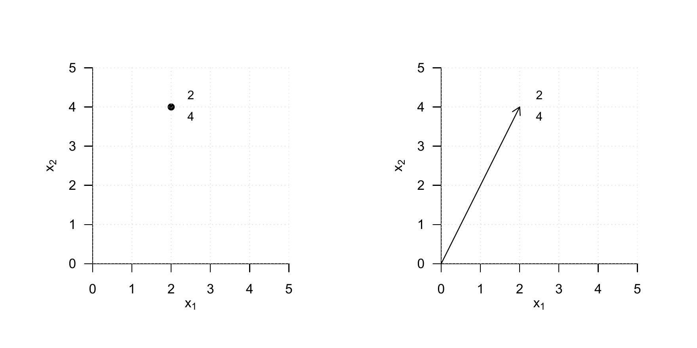
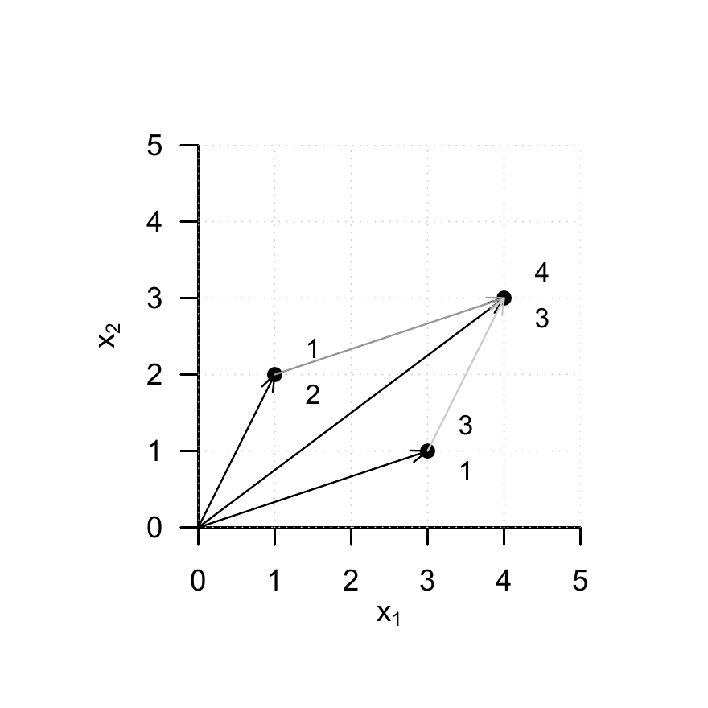
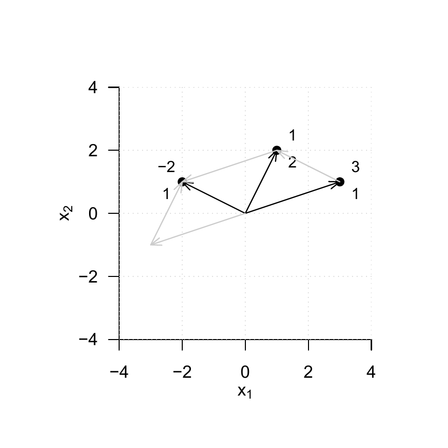
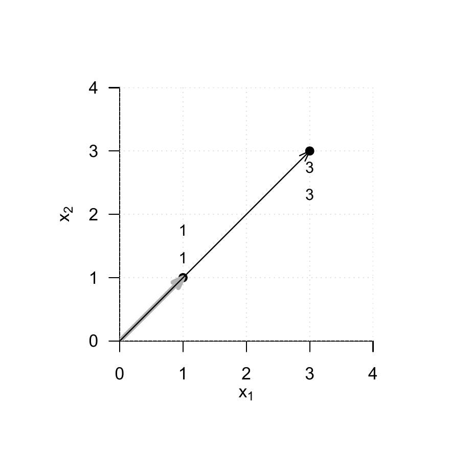
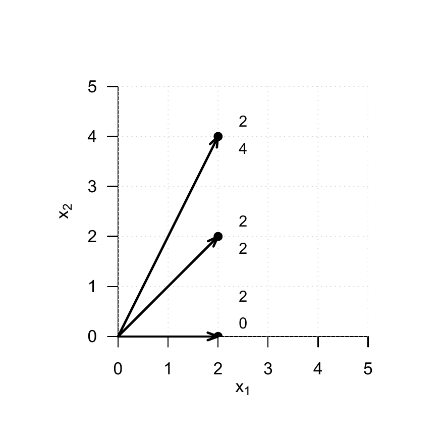
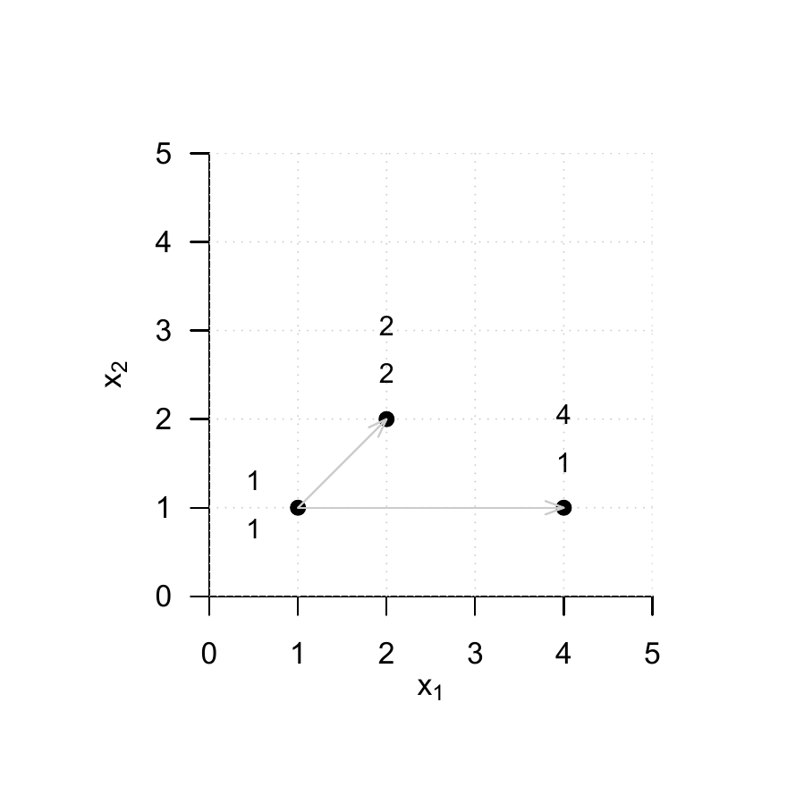
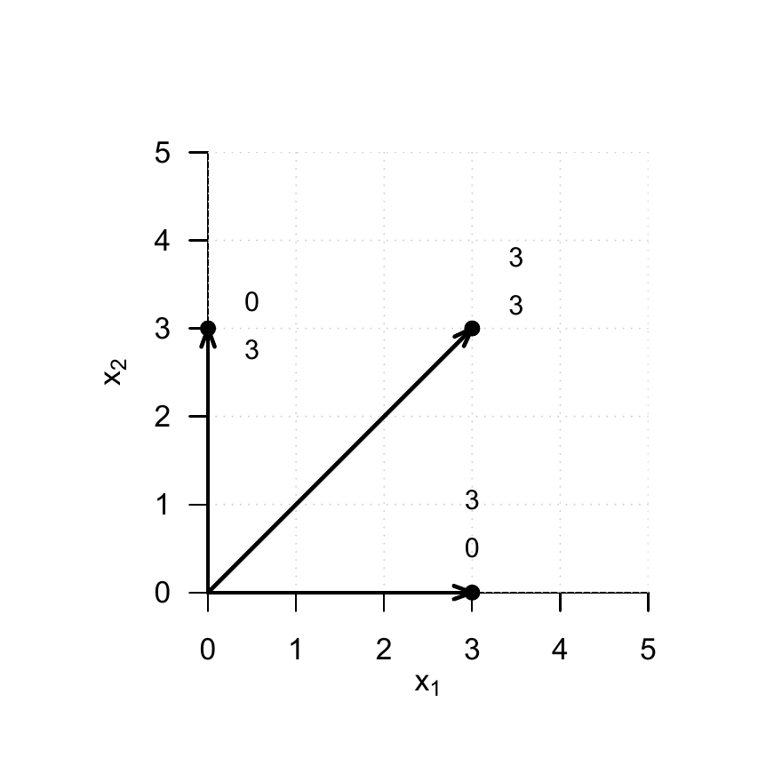
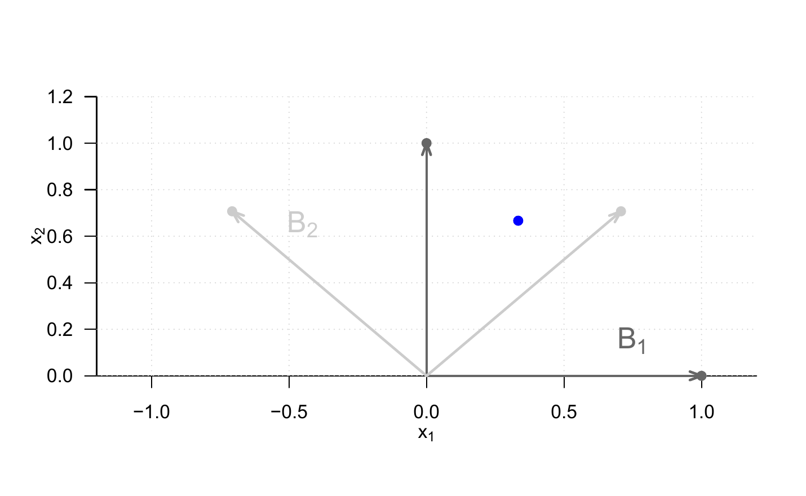

[,1]
[1,] 3
[2,] 3
[3,] 3
[4,] 58 Vectors
In scientific modeling, one often considers phenomena characterized by several quantitative features. For example, the position of an object in three-dimensional space is determined by three coordinates with respect to the three axes of a Cartesian coordinate system. Similarly, a person’s health state may be characterized by three measured values, for example a self-report score, a biomarker, and an expert rating. For modeling and analyzing such multidimensional quantitative phenomena, mathematics provides a versatile tool in the form of the real vector space. In this chapter, we first introduce the concept of a real vector space and the basic arithmetic of vectors (Section 8.1). A vector space structure that is strongly guided by three-dimensional spatial intuition is then provided by the Euclidean vector space (Section 8.2). With vector arithmetic, all vectors of a vector space can be formed from a small collection of distinguished vectors. We discuss the concepts underlying this principle in Section 8.3 and Section 8.4.
8.1 Real vector space
We begin with the general definition of a vector space, which specifies basic rules for computing with vectors.
Definition 8.1 (Vector space) Let \(V\) be a nonempty set and let \(S\) be a set of scalars. Furthermore, let a mapping \[\begin{equation} + : V \times V \to V, (v_1,v_2) \mapsto +(v_1, v_2) =: v_1 + v_2, \end{equation}\] called vector addition, be defined. Finally, let a mapping \[\begin{equation} \cdot : S \times V \to V, (s,v) \mapsto \cdot(s,v) =: sv, \end{equation}\] called scalar multiplication, be defined. Then the tuple \((V,S,+,\cdot)\) is called a vector space if and only if, for arbitrary elements \(v,w,u\in V\) and \(a,b \in S\), the following conditions hold:
(1) Commutativity of vector addition. \[ v + w = w + v. \] (2) Associativity of vector addition. \[ (v + w) + u = v + (w + u) \] (3) Existence of an identity element for vector addition. \[ \mbox{There exists a vector } 0 \in V \mbox{ with } v + 0 = 0 + v = v. \] (4) Existence of inverse elements for vector addition. \[ \mbox{For all vectors } v \in V \mbox{ there exists a vector } -v \in V \mbox{ with } v + (-v) = 0. \] (5) Existence of an identity element for scalar multiplication. \[ \mbox{There exists a scalar } 1 \in S \mbox{ with } 1 \cdot v = v. \] (6) Associativity of scalar multiplication. \[ a \cdot (b \cdot v) = (a \cdot b)\cdot v. \] (7) Distributivity with respect to vector addition. \[ a\cdot (v + w) = a\cdot v + a \cdot w. \] (8) Distributivity with respect to scalar addition. \[ (a + b)\cdot v = a\cdot v + b\cdot v. \]
It is striking that Definition 8.1 specifies how one should compute with vectors, but does not state what a vector actually is beyond being an element of a set. This is due to the fact that there are many different mathematical objects for which vector space structures can be defined. Examples include the set of real \(m\)-tuples, the set of matrices, the set of polynomials, the set of solutions of a linear system of equations, the set of real sequences, the set of continuous functions, and many others.
Here we are initially interested only in the vector space of the set of real \(m\)-tuples. We recall that we denote the real \(m\)-tuples by \[\begin{equation} \mathbb{R}^m := \left\lbrace \begin{pmatrix} x_1 \\ \vdots \\ x_m \end{pmatrix} | x_i \in \mathbb{R} \mbox{ for all } 1 \le i \le m \right\rbrace \end{equation}\] and pronounce \(\mathbb{R}^m\) as “\(\mathbb{R}\) to the power of m”. The elements \(x \in \mathbb{R}^m\) are called real vectors or simply vectors. We now want to use the set \(\mathbb{R}^m\) as the basis for the definition of a vector space. To this end, we first define vector addition for elements of \(\mathbb{R}^m\) and scalar multiplication for elements of \(\mathbb{R}\) and \(\mathbb{R}^m\).
Definition 8.2 (Vector addition and scalar multiplication in \(\mathbb{R}^m\)) For all \(x,y \in \mathbb{R}^m\) and \(a \in \mathbb{R}\), let vector addition be defined by \[\begin{equation} + : \mathbb{R}^m \times \mathbb{R}^m \to \mathbb{R}^m, (x,y) \mapsto x + y = \begin{pmatrix} x_1 \\ \vdots \\ x_m \end{pmatrix} + \begin{pmatrix} y_1 \\ \vdots \\ y_m \end{pmatrix} := \begin{pmatrix} x_1 + y_1 \\ \vdots \\ x_m + y_m \end{pmatrix} \end{equation}\] and let scalar multiplication be defined by \[\begin{equation} \cdot : \mathbb{R} \times \mathbb{R}^m \to \mathbb{R}^m, (a,x) \mapsto ax = a \begin{pmatrix} x_1 \\ \vdots \\ x_m \end{pmatrix} := \begin{pmatrix} ax_1 \\ \vdots \\ a x_m \end{pmatrix} \end{equation}\]
This yields the following result.
Theorem 8.1 (Real vector space) \((\mathbb{R}^m,\mathbb{R},+,\cdot)\) with the arithmetic rules of addition and multiplication in \(\mathbb{R}\) is a vector space.
For a proof, which we omit here, one has to verify conditions (1) to (8) from Definition 8.1 for the set considered here and the forms of vector addition and scalar multiplication specified here. These follow easily from the arithmetic rules of addition and multiplication in \(\mathbb{R}\) and from the fact that vector addition and scalar multiplication for elements of \(\mathbb{R}^m\) were defined componentwise in Definition 8.2. We thus define the concept of the real vector space.
Definition 8.3 (Real vector space) For \(\mathbb{R}^m\), let \(+\) and \(\cdot\) be the vector addition and scalar multiplication defined in Definition 8.2. Then, based on Theorem 8.1, we call the vector space \((\mathbb{R}^m,\mathbb{R},+,\cdot)\) the real vector space.
On the basis of Definition 8.3, we now illustrate computing with real vectors by means of a few examples.
Examples
(1) For
\[ x:= \begin{pmatrix} 1 \\ 2 \\ 3 \\ 4 \end{pmatrix} \in \mathbb{R}^4 \mbox{ and } y:= \begin{pmatrix} 2 \\ 1 \\ 0 \\ 1 \end{pmatrix} \in \mathbb{R}^4 \] we have \[ x + y = \begin{pmatrix} 1 \\ 2 \\ 3 \\ 4 \end{pmatrix} + \begin{pmatrix} 2 \\ 1 \\ 0 \\ 1 \end{pmatrix} = \begin{pmatrix} 1 + 2 \\ 2 + 1 \\ 3 + 0\\ 4 + 1 \end{pmatrix} = \begin{pmatrix} 3 \\ 3\\ 3 \\ 5 \end{pmatrix} \in \mathbb{R}^4. \] In R, one implements this example as follows.
(2) For \[ x:= \begin{pmatrix} 2 \\ 3 \end{pmatrix} \in \mathbb{R}^2 \mbox{ and } y:= \begin{pmatrix} 1 \\ 3 \end{pmatrix} \in \mathbb{R}^2 \] we have \[ x - y = \begin{pmatrix} 2 \\ 3 \end{pmatrix} - \begin{pmatrix} 1 \\ 3 \end{pmatrix} = \begin{pmatrix} 2 - 1 \\ 3 - 3 \end{pmatrix} = \begin{pmatrix} 1 \\ 0 \end{pmatrix} \in \mathbb{R}^2. \] In R, one implements this example as follows.
[,1]
[1,] 1
[2,] 0(3) For \[ x:= \begin{pmatrix} 2 \\ 1 \\ 3 \end{pmatrix} \in \mathbb{R}^3 \mbox{ and } a := 3 \in \mathbb{R} \] we have \[ ax = 3 \begin{pmatrix} 2 \\ 1 \\ 3 \end{pmatrix} = \begin{pmatrix} 3 \cdot 2 \\ 3 \cdot 1 \\ 3 \cdot 3 \end{pmatrix} = \begin{pmatrix} 6 \\ 3 \\ 9 \end{pmatrix} \in \mathbb{R}^3. \] In R, one implements this example as follows.
[,1]
[1,] 6
[2,] 3
[3,] 9For \(m \in \{1,2,3\}\), real vectors and computations with them can be visualized. For \(m > 3\), for example when more than three quantitative features of a person’s health state are available, as is regularly the case in applications, this is not possible. Nevertheless, visual intuition for \(m \le 3\) may facilitate an initial understanding of vector spaces. We focus here on the case \(m := 2\). In this case, the real vectors under consideration lie in the two-dimensional plane and are usually visualized as points or arrows (Figure 8.1).

Figure 8.2 visualizes the vector addition \[\begin{equation} \begin{pmatrix} 1 \\ 2 \end{pmatrix} + \begin{pmatrix} 3 \\ 1 \end{pmatrix} = \begin{pmatrix} 4 \\ 3 \end{pmatrix}. \end{equation}\] The sum vector corresponds to the diagonal of the parallelogram spanned by the two summands.

Figure 8.3 visualizes the vector subtraction \[\begin{equation} \begin{pmatrix} 1 \\ 2 \end{pmatrix} - \begin{pmatrix} 3 \\ 1 \end{pmatrix} = \begin{pmatrix} 1 \\ 2 \end{pmatrix} + \begin{pmatrix} -3 \\ -1 \end{pmatrix} = \begin{pmatrix} -2 \\ \,\, 1 \end{pmatrix} \end{equation}\] The resulting vector corresponds to the diagonal of the parallelogram spanned by the first vector and the opposite vector of the second vector.

Finally, Figure 8.4 visualizes the scalar multiplication \[\begin{equation} 3 \begin{pmatrix} 1 \\ 1 \end{pmatrix} = \begin{pmatrix} 3 \\ 3 \end{pmatrix} \end{equation}\] Multiplication of a vector by a positive scalar changes only its length, but not its direction.

8.2 Euclidean vector space
By defining the inner product, the real vector space can be endowed with spatial-geometric intuition in the sense of a Euclidean vector space. In particular, this makes it possible to define and compute concepts such as the length of a vector, the distance between two vectors, and, not least, the angle between two vectors. We first introduce the inner product.
Definition 8.4 (Inner product on \(\mathbb{R}^m\)) The inner product on \(\mathbb{R}^m\) is defined as the mapping \[\begin{equation} \langle \rangle : \mathbb{R}^m \times \mathbb{R}^m \to \mathbb{R}, (x,y) \mapsto \langle (x,y) \rangle := \langle x,y \rangle := \sum_{i=1}^m x_i y_i. \end{equation}\]
The inner product is called an inner product because it yields a scalar, not because it involves multiplication by scalars. The inner product is closely related to the matrix product, as we will see later. We first consider an example and its implementation in R.
Example
Let \[\begin{equation} x := \begin{pmatrix} 1 \\ 2 \\ 3 \end{pmatrix} \mbox{ and } y := \begin{pmatrix} 2 \\ 0 \\ 1 \end{pmatrix} \end{equation}\] Then \[\begin{equation} \langle x,y \rangle = x_1y_1 + x_2y_2 + x_3y_3 = 1 \cdot 2 + 2 \cdot 0 + 3 \cdot 1 = 2 + 0 + 3 = 5. \end{equation}\]
In R, there are several ways to evaluate an inner product. We list two of them for the given example below.
[1] 5 [,1]
[1,] 5With the help of the inner product, the concept of the real vector space can be extended to the concept of the real canonical Euclidean vector space.
Definition 8.5 (Euclidean vector space) The tuple \(\left((\mathbb{R}^m, +, \cdot), \langle \rangle \right)\) consisting of the real vector space \((\mathbb{R}^m, +, \cdot)\) and the inner product \(\langle \rangle\) on \(\mathbb{R}^m\) is called the real canonical Euclidean vector space.
In general, every tuple consisting of a vector space and an inner product is called a “Euclidean vector space”. Informally, however, we often simply speak of \(\mathbb{R}^m\) as a “Euclidean vector space” and, in particular, of \(\left((\mathbb{R}^m, +, \cdot), \langle \rangle \right)\) as the “Euclidean vector space”. A Euclidean vector space is a vector space with geometric structure induced by the inner product. In particular, the geometric concepts of length, distance, and angle now acquire meaning in the Euclidean vector space. We define them as follows.
Definition 8.6 \(\left((\mathbb{R}^m, +, \cdot), \langle \rangle \right)\) is the Euclidean vector space.
(1) The length of a vector \(x \in \mathbb{R}^m\) is defined as \[\begin{equation} \Vert x \Vert := \sqrt{\langle x, x \rangle}. \end{equation}\] (2) The distance between two vectors \(x,y \in \mathbb{R}^m\) is defined as \[\begin{equation} d(x,y) := \Vert x - y \Vert. \end{equation}\] (3) The angle \(\alpha\) between two vectors \(x,y \in \mathbb{R}^m\) with \(x,y \neq 0\) is defined by \[\begin{equation} 0 \le \alpha \le \pi \mbox{ and } \cos \alpha := \frac{\langle x, y \rangle}{\Vert x \Vert \Vert y \Vert} \end{equation}\]
The length \(\Vert x \Vert\) of a vector \(x \in \mathbb{R}^m\) is also called the Euclidean norm of \(x\), the \(\ell_2\)-norm of \(x\), or simply the norm of \(x\). It is often denoted by \(\Vert x \Vert_2\). We consider three examples for determining the length of a vector and their corresponding R implementation. We illustrate these examples in Figure 8.5.
Example (1)
\[\begin{equation} \left\lVert \begin{pmatrix} 2 \\ 0 \end{pmatrix} \right\rVert = \sqrt{\left\langle \begin{pmatrix} 2 \\ 0 \end{pmatrix}, \begin{pmatrix} 2 \\ 0 \end{pmatrix} \right\rangle} = \sqrt{2^2 + 0^2} = \sqrt{4} = 2.00 \end{equation}\]
Example (2)
\[\begin{equation} \left\lVert \begin{pmatrix} 2 \\ 2 \end{pmatrix} \right\rVert = \sqrt{\left\langle \begin{pmatrix} 2 \\ 2 \end{pmatrix}, \begin{pmatrix} 2 \\ 2 \end{pmatrix} \right\rangle} = \sqrt{2^2 + 2^2} = \sqrt{8} \approx 2.83 \end{equation}\]
Example (3)
\[\begin{equation} \left\lVert \begin{pmatrix} 2 \\ 4 \end{pmatrix} \right\rVert = \sqrt{\left\langle \begin{pmatrix} 2 \\ 4 \end{pmatrix}, \begin{pmatrix} 2 \\ 4 \end{pmatrix} \right\rangle} = \sqrt{2^2 + 4^2} = \sqrt{20} \approx 4.47 \end{equation}\]

For the distance \(d(x,y)\) between two vectors \(x,y\in\mathbb{R}^m\), we note without proof that it is nonnegative and symmetric, that is, \[\begin{equation} d(x,y) \ge 0, d(x,x) = 0 \mbox{ and } d(x,y) = d(y,x) \end{equation}\] hold. Moreover, \(d(x,y)\) satisfies the so-called triangle inequality, which states that the direct path between two points in space is always shorter than an indirect path through a third point, \[\begin{equation} d(x,y) \le d(x,z) + d(z,y). \end{equation}\] Thus, \(d(x,y)\) satisfies important aspects of spatial intuition. We give two examples for determining distances between vectors in \(\mathbb{R}^2\), which we visualize in Figure 8.6.
Example (1)
\[\begin{equation} d\left(\begin{pmatrix} 1 \\ 1 \end{pmatrix}, \begin{pmatrix} 2 \\ 2 \end{pmatrix}\right) = \left\lVert \begin{pmatrix} 1 \\ 1 \end{pmatrix} - \begin{pmatrix} 2 \\ 2 \end{pmatrix} \right\rVert = \left\lVert \begin{pmatrix} -1 \\ -1 \end{pmatrix} \right\rVert = \sqrt{(-1)^2 + (-1)^2} = \sqrt{2} \approx 1.41 \end{equation}\]
Example (2)
\[\begin{equation} d\left(\begin{pmatrix} 1 \\ 1 \end{pmatrix}, \begin{pmatrix} 4 \\ 1 \end{pmatrix}\right) = \left\lVert \begin{pmatrix} 1 \\ 1 \end{pmatrix} - \begin{pmatrix} 4 \\ 1 \end{pmatrix} \right\rVert = \left\lVert \begin{pmatrix} -3 \\ 0 \end{pmatrix} \right\rVert = \sqrt{(-3)^2 + 0^2} = \sqrt{9} = 3 \end{equation}\]

Finally, we note that for the calculation of the angle between two vectors based on the above definition, the cosine function \(\cos\) is bijective on \([0,\pi]\) and hence invertible with inverse function \(acos\), the arccosine function. We also consider two examples for the concept of angle. Note in particular that Definition 8.6 gives the angle in radians. For a specification in degrees, a corresponding conversion is required.
Example (1)
\[\begin{equation} \mbox{acos} \left(\frac{\left\langle \begin{pmatrix} 3 \\ 0 \end{pmatrix}, \begin{pmatrix} 3 \\ 3 \end{pmatrix} \right\rangle} {\left\lVert \begin{pmatrix} 3 \\ 0 \end{pmatrix} \right\rVert \left\lVert \begin{pmatrix} 3 \\ 3 \end{pmatrix} \right\rVert} \right) = \mbox{acos} \left(\frac{3\cdot 3 + 3 \cdot 0} {\sqrt{3^2 + 0^2} \cdot \sqrt{3^2 + 3^2}} \right) = \mbox{acos} \left(\frac{9} {3 \cdot \sqrt{18}} \right) = \frac{\pi}{4} \approx 0.785 \end{equation}\]
The conversion to degrees then gives \[\begin{equation} 0.785 \cdot \frac{180^\circ}{\pi} = 45^\circ \end{equation}\] In R, one implements this as follows.
[1] 45Example (2)
\[\begin{equation} \alpha = \mbox{acos} \left(\frac{\left\langle \begin{pmatrix} 3 \\ 0 \end{pmatrix}, \begin{pmatrix} 0 \\ 3 \end{pmatrix} \right\rangle} {\left\lVert \begin{pmatrix} 3 \\ 0 \end{pmatrix} \right\rVert \left\lVert \begin{pmatrix} 0 \\ 3 \end{pmatrix} \right\rVert} \right) = \mbox{acos} \left(\frac{3\cdot 0 + 0 \cdot 3} {\sqrt{3^2 + 0^2} \cdot \sqrt{0^2 + 3^2}} \right) = \mbox{acos} \left(\frac{0} {3 \cdot 3} \right) = \frac{\pi}{2} \approx 1.57 \end{equation}\] The conversion to degrees then gives \[\begin{equation} \frac{\pi}{2} \cdot \frac{180^\circ}{\pi} = 90^\circ \end{equation}\] The corresponding R implementation is as follows.
[1] 90
The fact that two vectors can form a right angle, that is, can in a sense be maximally non-parallel, is an important geometric principle and is therefore singled out by the following definition.
Definition 8.7 (Orthogonality and orthonormality of vectors) Let \(\left((\mathbb{R}^m, +, \cdot), \langle \rangle \right)\) be the Euclidean vector space.
(1) Two vectors \(x,y \in \mathbb{R}^m\) are called orthogonal if \[\begin{equation} \langle x, y \rangle = 0 \end{equation}\] (2) Two vectors \(x,y \in \mathbb{R}^m\) are called orthonormal if \[\begin{equation} \langle x, y \rangle = 0 \mbox{ and } \Vert x \Vert = \Vert y \Vert = 1. \end{equation}\]
For orthogonal and orthonormal vectors, in particular, we therefore also have \[\begin{equation} \cos \alpha = \frac{\langle x, y \rangle}{\Vert x \Vert \Vert y \Vert} = \frac{0}{\Vert x \Vert \Vert y \Vert} = 0, \end{equation}\] and hence \[\begin{equation} \alpha = \frac{\pi}{2} = 90^\circ. \end{equation}\]
8.3 Linear independence
In this section, we introduce the concept of linear independence of vectors. To this end, we first define the concept of a linear combination of vectors.
Definition 8.8 (Linear combination) Let \(\{v_1, v_2, ..., v_k\}\) be a set of \(k\) vectors of a vector space \(V\), and let \(a_1, a_2,...,a_k\) be scalars. Then the linear combination of the vectors in \(\{v_1, v_2, ..., v_k\}\) with the coefficients \(a_1, a_2,...,a_k\) is defined as the vector \[\begin{equation} w := \sum_{i=1}^k a_i v_i \in V. \end{equation}\]
Example
Let \[\begin{equation} v_1 := \begin{pmatrix} 2 \\ 1 \end{pmatrix}, v_2 := \begin{pmatrix} 1 \\ 1 \end{pmatrix}, v_3 := \begin{pmatrix} 0 \\ 1 \end{pmatrix} \mbox{ and } a_1 := 2, a_2 := 3, a_3 := 0. \end{equation}\] Then the linear combination of \(v_1,v_2,v_3\) with coefficients \(a_1,a_2,a_3\) is \[\begin{align} \begin{split} w & = a_1v_1 + a_2v_2 + a_3v_3 \\ & = 2 \cdot \begin{pmatrix} 2 \\ 1 \end{pmatrix} + 3 \cdot \begin{pmatrix} 1 \\ 1 \end{pmatrix} + 0 \cdot \begin{pmatrix} 0 \\ 1 \end{pmatrix} \\ & = \begin{pmatrix} 4 \\ 2 \end{pmatrix} + \begin{pmatrix} 3 \\ 3 \end{pmatrix} + \begin{pmatrix} 0 \\ 0 \end{pmatrix} \\ & = \begin{pmatrix} 7 \\ 5 \end{pmatrix}. \end{split} \end{align}\]
Based on the concept of a linear combination, one can now define the concept of linear independence of vectors.
Definition 8.9 (Linear independence) Let \(V\) be a vector space. A set \(W := \{w_1, w_2, ...,w_k\}\) of vectors in \(V\) is called linearly independent if the only representation of the zero element \(0 \in V\) by a linear combination of the \(w \in W\) is the so-called trivial representation \[\begin{equation} 0 = a_1 w_1 + a_2 w_2 + \cdots + a_k w_k \mbox{ with } a_1 = a_2 = \cdots = a_k = 0 \end{equation}\] If the set \(W\) is not linearly independent, it is called linearly dependent.
To check whether a given set of vectors is linearly dependent or independent, in principle one has to check whether a possible linear combination of the given vectors is zero. Theorem 8.2 and Theorem 8.3 show how this can be achieved with less effort for two and for finitely many vectors, respectively.
Theorem 8.2 (Linear dependence of two vectors) Let \(V\) be a vector space. Two vectors \(v_1, v_2 \in V\) are linearly dependent if one of the vectors is a scalar multiple of the other vector.
Proof. Let \(v_1\) be a scalar multiple of \(v_2\), that is, \[\begin{equation} v_1 = \lambda v_2 \mbox{ with } \lambda \neq 0. \end{equation}\] Then \[\begin{equation} v_1 - \lambda v_2 = 0. \end{equation}\] But this corresponds to the linear combination \[\begin{equation} a_1v_1 + a_2v_2 = 0 \end{equation}\] with \(a_1 = 1 \neq 0\) and \(a_2 = -\lambda \neq 0\). Thus, there exists a linear combination of the zero element that is not the trivial representation, and hence \(v_1\) and \(v_2\) are not linearly independent.
Theorem 8.3 (Linear dependence of a set of vectors) Let \(V\) be a vector space, and let \(w_1,...,w_k \in V\) be a set of vectors in \(V\). If one of the vectors \(w_i\) with \(i = 1,...,k\) is a linear combination of the other vectors, then the set of vectors is linearly dependent.
Proof. The vectors \(w_1,...,w_k\) are linearly dependent if and only if \(\sum_{i=1}^k a_i w_i = 0\) with at least one \(a_i \neq 0\). Thus, for example, let \(a_j \neq 0\). Then \[\begin{equation} 0 = \sum_{i=1}^k a_i w_i = \sum_{i=1, i \neq j}^k a_i w_i + a_jw_j \end{equation}\] Therefore, \[\begin{equation} a_jw_j = - \sum_{i=1, i \neq j}^k a_i w_i \end{equation}\] and thus \[\begin{equation} w_j = - a_j^{-1}\sum_{i=1, i \neq j}^k a_i w_i = - \sum_{i=1, i \neq j}^k (a_j^{-1}a_i) w_i \end{equation}\] Thus, \(w_j\) is a linear combination of the \(w_i\) for \(i = 1,...,k\) with \(i \neq j\).
8.4 Vector space bases
In this section, we introduce the concept of a vector space basis. A basis of a vector space is a subset of vectors of the vector space that can be used to represent all vectors of the vector space. In the sense of linear combinations of vectors, a vector space basis therefore contains all information needed to construct the corresponding vector space. However, a vector space basis is usually not unique, and many vector spaces indeed have infinitely many bases. The following definition first states how infinitely many vectors can be formed from a limited number of vectors by means of linear combinations.
Definition 8.10 (Span and spanning) Let \(V\) be a vector space, and let \(W := \{w_1,...,w_k\} \subset V\). Then the span of \(W\) is defined as the set of all linear combinations of the elements of \(W\), \[\begin{equation} \mbox{Span}(W) := \left\lbrace \sum_{i=1}^k a_iw_i \vert a_1,...,a_k \mbox{ are scalar coefficients } \right\rbrace \end{equation}\] A set of vectors \(W \subseteq V\) is said to span a vector space \(V\) if every \(v \in V\) can be written as a linear combination of vectors in \(W\).
We now define the concept of a basis of a vector space.
Definition 8.11 (Basis) Let \(V\) be a vector space, and let \(B \subseteq V\). \(B\) is called a basis of \(V\) if
- the vectors in \(B\) are linearly independent, and
- the vectors in \(B\) span the vector space \(V\).
Bases of vector spaces have the following important properties.
Theorem 8.4 (Properties of bases)
- All bases of a vector space contain the same number of vectors.
- Every set of \(m\) linearly independent vectors is a basis of an \(m\)-dimensional vector space.
For a proof of this very deep theorem, we refer to the advanced literature. The unique number of vectors in a basis of a vector space named by the above theorem is called the dimension of the vector space. Since there are usually infinitely many sets of m linearly independent vectors in a vector space, vector spaces usually have infinitely many bases.
If one considers a single vector in a vector space, one may ask how this vector can be represented with the help of a vector space basis. This leads to the following concepts.
Definition 8.12 (Basis representation and coordinates) Let \(B := \{b_1,...,b_m\}\) be a basis of an \(m\)-dimensional vector space \(V\), and let \(v \in V\). Then the linear combination \[\begin{equation} v = \sum_{i = 1}^m c_i b_i \end{equation}\] is called the representation of \(v\) with respect to the basis \(B\), and the coefficients \(c_1,...,c_m\) are called the coordinates of \(v\) with respect to the basis \(B\).
For a fixed basis, the coordinates of a vector with respect to this basis are also fixed and unique. This is the statement of the following theorem.
Theorem 8.5 (Uniqueness of basis representation) The basis representation of a \(v \in V\) with respect to a basis \(B\) is unique.
Proof. Without loss of generality, assume that the vector space has dimension \(m\). Assume that two representations of \(v\) with respect to the basis \(B\) exist, that is, \[\begin{align} \begin{split} v & = a_1 b_1 + \cdots + a_m b_m \\ v & = c_1 b_1 + \cdots + c_m b_m \end{split} \end{align}\] Subtracting the lower equation from the upper equation gives \[\begin{equation} 0 = (a_1 - c_1) b_1 + \cdots + (a_m - c_m) b_m \end{equation}\] Because \(b_1,...,b_m\) are linearly independent, however, \((a_i - c_i) = 0\) for all \(i = 1,...,m\), and thus the two representations of \(v\) with respect to the basis \(B\) are identical.
At the end of this section, we consider a special basis of the real vector space.
Definition 8.13 (Orthonormal basis of \(\mathbb{R}^m\)) A set of \(m\) vectors \(v_1,...,v_m \in \mathbb{R}^m\) is called an orthonormal basis of \(\mathbb{R}^m\) if \(v_1,...,v_m\) each have length 1 and are mutually orthogonal, that is, if \[\begin{equation} \langle v_i, v_j \rangle = \begin{cases} 1 & \mbox{ for } i = j \\ 0 & \mbox{ for } i \neq j \end{cases}. \end{equation}\]
We first consider an example of an orthonormal basis.
Example (1)
\[\begin{equation} B_1 := \left\lbrace \begin{pmatrix} 1 \\ 0 \end{pmatrix}, \begin{pmatrix} 0 \\ 1 \end{pmatrix} \right\rbrace \end{equation}\] is an orthonormal basis of \(\mathbb{R}^2\), because \(B_1\) consists of two vectors and \[\begin{equation} \left\langle \begin{pmatrix} 1 \\ 0 \end{pmatrix}, \begin{pmatrix} 1 \\ 0 \end{pmatrix} \right\rangle = 1 \cdot 1 + 0 \cdot 0 = 1 + 0 = 1 \end{equation}\] as well as \[\begin{equation} \left \langle \begin{pmatrix} 0 \\ 1 \end{pmatrix}, \begin{pmatrix} 0 \\1 \end{pmatrix} \right \rangle = 0 \cdot 0 + 1 \cdot 1 = 0 + 1 = 1 \end{equation}\] and \[\begin{equation} \left \langle \begin{pmatrix} 1 \\ 0 \end{pmatrix}, \begin{pmatrix} 0 \\ 1 \end{pmatrix} \right \rangle = 1 \cdot 0 + 0 \cdot 1 = 0 + 0 = 0 \end{equation}\] hold.
For general real vector spaces, bases of the form of \(B_1\) are singled out by the concept of the canonical basis.
Definition 8.14 (Canonical basis and standard unit vectors) The orthonormal basis \[\begin{equation} B := \left\lbrace e_1,...,e_m \vert (e_i)_j = 1 \mbox{ for } i = j \mbox{ and } (e_i)_j = 0 \mbox{ for } i \neq j, \, i,j = 1,...,m \right\rbrace \subset \mathbb{R}^m \end{equation}\] is called the canonical basis of \(\mathbb{R}^m\), and the \(e_i\) are called standard unit vectors.
\(B_1\) from Example (1) is therefore the canonical basis of \(\mathbb{R}^2\).
The canonical basis of \(\mathbb{R}^3\) is \[\begin{equation} B := \left\lbrace \begin{pmatrix} 1 \\ 0 \\ 0 \end{pmatrix}, \begin{pmatrix} 0 \\ 1 \\ 0 \end{pmatrix}, \begin{pmatrix} 0 \\ 0 \\ 1 \end{pmatrix} \right\rbrace. \end{equation}\]
However, there are also non-canonical orthonormal bases. To see this, we consider another example.
Example (2)
\[\begin{equation} B_2 := \left\lbrace \begin{pmatrix} \frac{1}{\sqrt{2}} \\ \frac{1}{\sqrt{2}} \end{pmatrix}, \begin{pmatrix} - \frac{1}{\sqrt{2}} \\ \quad \frac{1}{\sqrt{2}} \end{pmatrix} \right\rbrace \end{equation}\] is also an orthonormal basis of \(\mathbb{R}^2\), because \(B_2\) consists of two vectors and \[\begin{equation} \left \langle \begin{pmatrix} \frac{1}{\sqrt{2}} \\ \frac{1}{\sqrt{2}} \end{pmatrix}, \begin{pmatrix} \frac{1}{\sqrt{2}} \\ \frac{1}{\sqrt{2}} \end{pmatrix} \right \rangle = \frac{1}{\sqrt{2}} \cdot \frac{1}{\sqrt{2}} + \frac{1}{\sqrt{2}} \cdot \frac{1}{\sqrt{2}} = \frac{1}{2} + \frac{1}{2} = 1, \end{equation}\] as well as \[\begin{equation} \left \langle \begin{pmatrix} - \frac{1}{\sqrt{2}} \\ \quad \frac{1}{\sqrt{2}} \end{pmatrix}, \begin{pmatrix} - \frac{1}{\sqrt{2}} \\ \quad \frac{1}{\sqrt{2}} \end{pmatrix} \right \rangle = \left(- \frac{1}{\sqrt{2}} \right)\cdot \left(- \frac{1}{\sqrt{2}} \right) + \frac{1}{\sqrt{2}} \cdot \frac{1}{\sqrt{2}} = \frac{1}{2} + \frac{1}{2} = 1 \end{equation}\] and \[\begin{equation} \left \langle \begin{pmatrix} - \frac{1}{\sqrt{2}} \\ \quad \frac{1}{\sqrt{2}} \end{pmatrix}, \begin{pmatrix} \frac{1}{\sqrt{2}} \\ \frac{1}{\sqrt{2}} \end{pmatrix} \right \rangle = - \frac{1}{\sqrt{2}} \cdot \frac{1}{\sqrt{2}} + \frac{1}{\sqrt{2}} \cdot \frac{1}{\sqrt{2}} = - \frac{1}{2} + \frac{1}{2} = 0 \end{equation}\] hold.
We visualize the two orthonormal bases \(B_1\) and \(B_2\) of \(\mathbb{R}^2\) in Figure 8.8.
